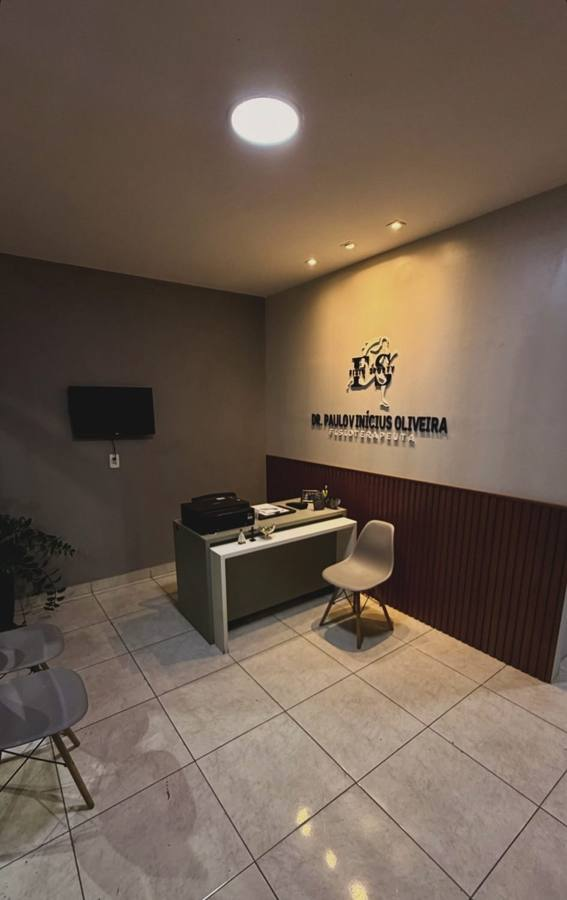
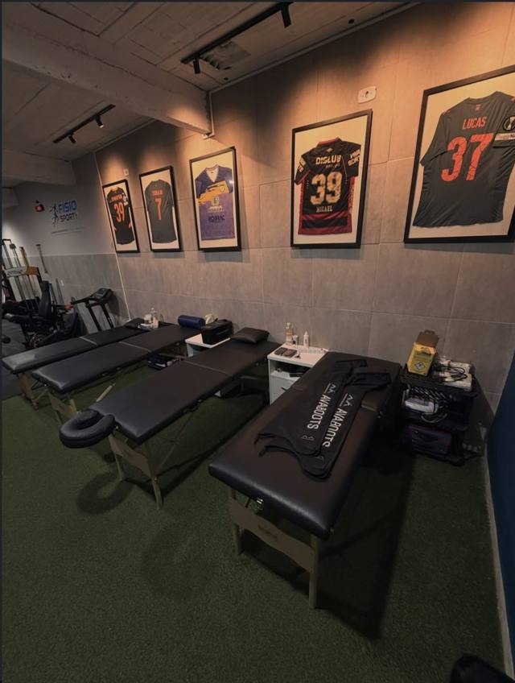

Dr. Wanderson Vasco
Fisioterapeuta · CREFITO 444739-F-F
- Fisioterapia Traumato Ortopédica
- Fisioterapia Esportiva
- Fisioterapia na Saúde do Idoso
- Reabilitação em Coluna Vertebral




Centro Integrado de Saúde · Pesqueira-PE
Fisioterapia para toda a família, do esportista ao idoso. Tratamento personalizado, com equipe de fisioterapeutas especializados.
Escolha o que mais combina com a sua situação e fale direto com a clínica. A mensagem já vai pronta no WhatsApp.
Conte o que você sente e escolha um horário.
Um fisioterapeuta analisa o seu caso com atenção.
Plano personalizado para a sua recuperação e bem-estar.
Não consegue vir até a clínica? Temos atendimento domiciliar para quem precisa de cuidado no conforto de casa.
Saber sobre atendimento domiciliarProfissionais com registro e especialização nas áreas em que atuam. Escolha com quem quer agendar.
Fisioterapeuta · CREFITO 444739-F-F
Fisioterapeuta · CREFITO 453183

Fisioterapeuta · CREFITO 448701-F

Fisioterapeuta · CREFITO 368812-F

Fisioterapeuta · CREFITO 396499-F

Nutricionista · CRN 28323
Agendar consulta
Nutricionista · CRN 50250
Agendar consulta
Psicólogo · CRP 02/26848
Agendar consultaFale com a Fisio Sporty agora e agende a sua avaliação. Atendemos em Pesqueira-PE.
Agendar pelo WhatsApp · (87) 99802-7603